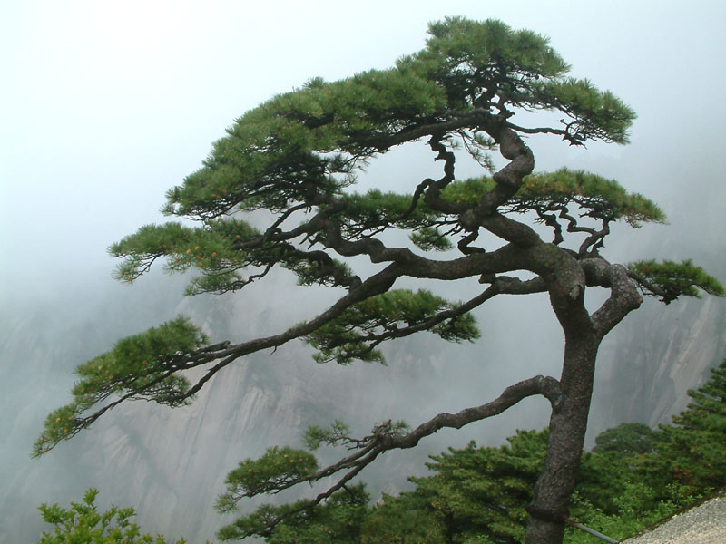

| 黄山奇松 |
|
奇松是黄山“四绝”之首，黄山无峰不石，无石不松。七十二峰，处处都有青松点染，如一支支神奇的画笔，把五百里黄山抹上了生命的色彩。于是，景美了，山活了，风动了，云涌了，雨多了，泉响了……连山石也有了灵气。难怪古人说：“黄山之美始于松。” 
黄山松，生长在海拔800米以上的黄山之巅，是植物学上一个独立的品种，它盘根于危岩峭壁之中，挺立于峰崖绝壑之上，巨松高数丈，小松不盈尺，破石而生，苍劲挺拔，那姿态，美得让人称奇，奇得让人叫绝。 黄山松千姿百态，或耸立挺拔，似擎天巨人；或翠枝舒展，如流水行云；或虬根盘结，如苍龙凌波；或矫健威武如猛虎归山――迎客松，送客松，陪客松，让人倍感亲切；竖琴松、连理松、探海松、让人浮想联翩…… 黄山松的特点是针叶短而稠密，树冠平整如盖苍翠欲滴，惹人喜爱。 且不说那展翅欲飞的凤凰松，玉麒腾跃的麒麟松；也不说那轻歌低吟的竖琴松，缠绵亲妮的连理松。单是那漫山遍野普普通通的无名松，就足以把黄山装点得妙不可言。 而立于玉屏峰上的迎客松，则是千千万万黄山松中的至宝，她雍容端庄，仪态万方，让人魂牵梦绕，流连忘返。迎客松是黄山的代表和象征，更是黄山人的化身和骄傲，她不仅被黄山人视为珍宝，更被中国人视为国宝。于是她的倩影走进了各族人民的心中，走进了人民大会堂，如今，又伴随着改革开放，和黄山旅游事业的真正身为黄山人才惦量得出。发展而走出国，走向世界。可是，迎客松毕竟已是寿逾千年的古松了。黄山人极为重视迎客松的保护工作。黄山园林局自1983年起，就为迎客松配备了一位专职特护，对她实行全天候科学守护。十多年来，迎客松未出现过任何意外。 黄山松，热情而又稳重，好客却不谦卑，亲切略带矜持，迎宾绝无虚意，她不仅描绘了黄山人的性格，更体现了中国人的风采! |